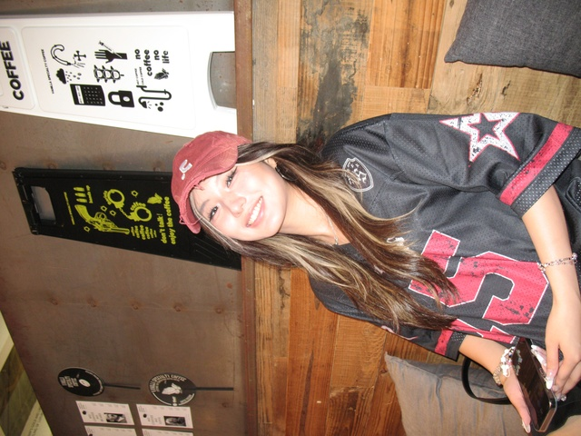

基本信息
备注
小红书2k粉
1-page Resume (Encouraged，PDF格式，中英文均可)
Portfolio or Additional Files (Optional，PDF或视频)
请把文件名命为：first name_Last name_netid
请上传一张自己的照片，普通的生活照就可以！（只是为了面试的时候我们可以把你认出来）

查看原图
查看原图
通用问题部分
为什么想要加入CSSA？
从收到康奈尔录取通知起，CSSA便是第一个向我伸出热情之手的组织。参加北京的新生见面会时，听着学长学姐们分享各种建议，我更加体会到CSSA给予华人学生的温暖与归属感。我希望加入CSSA，延续这份支持与家的氛围，并将它传递给更多的新生，帮助他们更快融入校园生活。
你心目中CSSA是个什么样的组织？
在我心目中，CSSA是一个温暖的大家庭。这里不仅充满爱与互助，更是让华人学生彼此联系、分享经验的平台。无论是学业上的支持，还是生活中的关怀，CSSA都在用心营造家的氛围。在CSSA，大家不只是社团里的成员，还是一群志同道合的伙伴们。CSSA让我们在异国他乡不再孤单，而是能依靠彼此，共同成长。
加入CSSA之后，你最想在康奈尔校园内实现的事情是什么？
在康村寒冷的冬天，我最想实现的就是让校园里的华人伙伴们在春节时都能吃上一碗热腾腾的饺子。通过举办春节包饺子或年夜饭活动，不仅能缓解思乡之情，也能让同学们在忙碌的学业之余感受到家的温暖。我希望用这样的方式，把大家凝聚在一起，共同创造难忘的回忆。
内联部
第一志愿为什么选择这个部门？
作为一名美高生，我曾在高中创立中国文化社团，并每月举办一次活动，例如包饺子、学习书法、分享传统节日故事等。这些经历不仅锻炼了我在活动组织、协调和经费管理方面的能力，也让我深刻体会到如何通过活动增强大家的参与感与凝聚力。我相信这些经验能够很好地应用在内联部的工作中，为CSSA营造更紧密的大家庭氛围。
宣传部
如有公众号排版、社交媒体运营或其他相关经历，请在下方文字框内粘贴相关公众号文章链接、作品链接，或进行补充说明。
小红书：罐装贴纸（id：128174340）现粉丝量2179
抖音：罐装贴纸（id：la4meyl_)现粉丝量9.8w
擅长于剪视频，特别是vlog形式。（虽然现在不是很经常发视频和帖子了，但是排版和剪视频还是挺拿手的^ ^）
第二志愿为什么选择这个部门？
作为一个热爱在抖音和小红书上创作内容的学生，我深知一段充满活力的视频有多么具有感染力。我希望将自己的技能应用到CSSA中，无论是剪辑社团内retreat的vlog，还是制作活动预告，通过社交平台宣传活动、打造吸引人的视觉内容，让更多同学了解并参与CSSA，同时提升组织在校园的影响力。
是否接受部门调剂？
是